prob <- extraDistr::dbbinom(0:30, 30, 25, 17)
tibble(Y=0:30, Probability = prob) %>%
ProbBayes::prob_plot(Color = "black")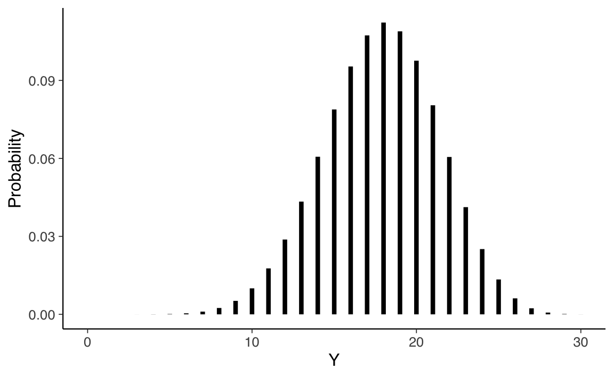
Oltre ad una sintesi della distribuzione a posteriori attraverso il computo di indici caratteristici e alla verifica di ipotesi, un altro compito dell’analisi bayesiana è la predizione di nuovi dati futuri. Dopo aver osservato i dati di un campione e dopo avere ricavato le distribuzioni a posteriori dei parametri, è infatti possibile ottenere delle indicazioni sulle proprietà di dati futuri. L’uso più immediato della stima della distribuzione dei possibili valori futuri della variabile di esito è la verifica del modello in esame. Infatti, il modo più diretto per testare un modello è quello di utilizzare il modello corrente per fare previsioni sui possibili dati futuri per poi confrontare i dati predetti con i dati che sono stati effettivamente osservati nel campione corrente. Questa pratica va sotto il nome di controllo predittivo a posteriori. In questo capitolo ci focalizzeremo sul problema della predizione bayesiana esaminando il caso più semplice, ovvero lo schema beta-binomiale. In seguito estenderemo questa discussione al caso generale.
Una volta costruita la distribuzione a posteriori del parametro o dei parametri sconosciuti, potremmo essere interessati a utilizzare il modello bayesiano allo scopo di prevedere la probabilità di risultati futuri basandoci sui dati già osservati. Questo tipo di analisi inferenziale va sotto il nome di analisi predittiva.
L’esempio che considereremo qui nei dettagli riguarda il caso beta-binomiale, nel quale la distribuzione a priori per il parametro ignoto \(\theta\) (ovvero, la probabilità di successo) è una distribuzione Beta, la verosimiglianza è binomiale e i dati sono costituiti dal numero \(y\) di successi in \(n\) prove Bernoulliane indipendenti. Nell’esempio che discuteremo useremo un’altra volta i dati del campione di pazienti clinici depressi di Zetsche et al. (2019). Supponendo di volere esaminare in futuro altri \(m\) pazienti clinici, ci chiediamo: quanti di essi manifesteranno una depressione grave?
Siamo dunque interessati a predire i risultati che si potrebbero osservare in nuovi campioni di \(m = 30\) osservazioni. Denotiamo con \(\tilde{y}\) la manifestazione della variabile casuale \(\tilde{Y}\). In un nuovo campione di \(m\) osservazioni, \(\tilde{y}\) assumerà il valore \(\tilde{y}_1\) (ad es., 12), in un altro campione assumerà il valore \(\tilde{y}_2\) (ad es., 23), e così via. Siamo interessati a descrivere la probabilità che \(\tilde{y}\) assuma i valori \(0, 1, 2, \dots, 29, 30\). Tale distribuzione (in questo caso) di massa di probabilità si chiama distribuzione predittiva a posteriori \(p(\tilde{Y} = \tilde{y} \mid Y = y)\) e corrisponde alla probabilità assegnata a ciascuno dei possibili valori \(\tilde{y}\) (\(0, 1, 2, \dots, 29, 30\)) nei possibili campioni futuri di \(m\) osservazioni.
In questo Capitolo ci porremo il problema di trovare la distribuzione predittiva a posteriori nel caso beta-binomiale. Useremo tre metodi diversi:
I tre metodi producono risultati equivalenti. In seguito useremo il metodo MCMC perché ci consente di trovare facilmente la risposta cercata, anche quando una soluzione analitica non è disponibile.
Nel caso dell’esempio in discussione, la distribuzione di \(\tilde{Y}\) dipende da \(\theta\) e ciò che sappiamo di \(\theta\) è sintetizzato nella distribuzione a posteriori \(p(\theta \mid y)\). Usando la regola della catena, possiamo scrivere la distribuzione congiunta di \(\tilde{y}\) e \(\theta\) nel modo seguente
\[ p(\tilde{y}, \theta \mid y) = p(\tilde{y} \mid \theta, y) p(\theta \mid y). \]
Assumendo che le osservazioni future \(\tilde{y}\) e passate \(y\) siano condizionalmente indipendenti dato \(\theta\), l’espressione precedente può essere scritta come
\[ p(\tilde{y}, \theta \mid y) = p(\tilde{y} \mid \theta) p(\theta \mid y). \]
La distribuzione predittiva a posteriori viene ottenuta dalla distribuzione congiunta di \(\tilde{y}\) e \(\theta\) integrando rispetto a \(\theta\):
\[ p(\tilde{y} \mid y) = \int_{\theta} p(\tilde{y} \mid \theta) p(\theta \mid y) \,\operatorname {d}\!\theta. \tag{24.1}\]
Nel caso dello schema beta-binomiale, la funzione \(p(\tilde{y} \mid \theta)\) è binomiale di parametri \(m\) e \(\theta\), e la distribuzione a posteriori \(p(\theta \mid y)\) è una \(\mbox{Beta}(\alpha + y, \beta + n - y)\). Risolvendo l’integrale otteniamo:
\[ \begin{align} p(\tilde{y} \mid y) &= \int_0^1 p(\tilde{y} \mid \theta) p(\theta \mid y)\,\operatorname {d}\!\theta \notag\\ &= \int_0^1 \begin{pmatrix}m\\\tilde{y}\end{pmatrix} \theta^{\tilde{y}} (1-\theta)^{m-\tilde{y}} \, \mbox{Beta}(a+y,b+n-y) \, d\theta \notag\\ &= \begin{pmatrix}{m}\\\tilde{y}\end{pmatrix} \int_0^1 \theta^{\tilde{y}} (1-\theta)^{m-\tilde{y}} \frac{1}{B(a+y, b+n-y)}\theta^{a+y-1}(1-\theta)^{b+n-y-1}\notag\\ &= \begin{pmatrix}{ m }\\\tilde{y}\end{pmatrix} \frac{1}{B(a+y, b+n-y)}\int_0^1 \theta^{\tilde{y}+a+y-1}(1-\theta)^{m-\tilde{y}+b+n-y-1}\notag\\ &= \begin{pmatrix}{ m }\\\tilde{y}\end{pmatrix} \frac{B(\tilde{y}+a+y,b+n-y+m-\tilde{y})}{B(a+y, b+n-y)} \; . \end{align} \tag{24.2}\]
In conclusione, per lo schema beta-binomiale, la distribuzione predittiva a posteriori corrisponde ad una distribuzione di probabilità discreta chiamata distribuzione beta-binomiale di parametri \(m\), \(\alpha+y\) e \(\beta+n-y\).
\[ f(\tilde{y} \mid y) = \binom{m}{\tilde{y}} \frac{B(a+ y + \tilde{y}, b + n - y + m - \tilde{y})}{B(a+y, b+n-y)}, \tag{24.3}\]
Nell’esempio relativo allo studio di Zetsche et al. (2019), la verosimiglianza è binomiale, i dati sono costituiti da 23 successi su 30 prove e la distribuzione a priori su \(\theta\) è \(\mbox{Beta}(2, 10)\). Di conseguenza, la distribuzione a posteriori è \(\mbox{Beta}(25, 17)\). Vogliamo calcolare la distribuzione predittiva a posteriori per un nuovo campione, poniamo, di \(m = 30\) osservazioni (ma, in generale, \(m\) può essere diverso da \(n\)).
In base all’Equazione 24.3 sappiamo che la distribuzione predittiva a posteriori è una distribuzione beta-binomiale di parametri \(m\), \(\alpha+y\) e \(\beta+n-y\), dove \(m\) è il numero di prove nel nuovo campione, \(\alpha\) e \(\beta\) sono i parametri della distribuzione a priori, e \(y\) e \(n\) sono le proprietà del campione corrente. Nel caso dell’esempio in discussione, \(m = 30\), \(\alpha = 2 + 23 = 25\), \(\beta = 10 + 30 - 23 = 17\). Possiamo svolgere i calcoli necessario usando le funzioni del pacchetto extraDistr. Per i parametri specificati sopra, un grafico della distribuzione predittiva a posteriori si ottiene nel modo seguente.
prob <- extraDistr::dbbinom(0:30, 30, 25, 17)
tibble(Y=0:30, Probability = prob) %>%
ProbBayes::prob_plot(Color = "black")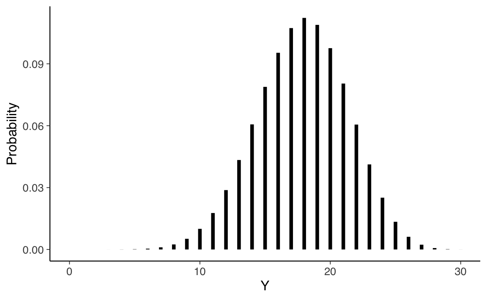
La distribuzione predittiva a posteriori illustrata nella figura precedente ci dice qual è la plausibilità relativa di osservare \(0, 1, \dots, 30\) successi su \(m = 30\) prove in un futuro campione di osservazioni, alla luce dei dati che abbiamo osservato nel campione corrente (23 successi in 30 prove) e tenuto conto delle nostre opinioni a priori sulla plausibilità dei possibili valori \(\theta\) (ovvero, \(\mbox{Beta}(2, 10)\)).
Esaminando la distribuzione predittiva notiamo che, nei possibili campioni futuri di 30 osservazioni, il valore \(\tilde{y}\) più plausibile è 18. Tuttavia, \(\tilde{y}\) può assumere anche altri valori e la distribuzione predittiva ci informa sulla plausibilità relativa di ciascuno dei possibili valori futuri \(\tilde{y}\) – nel presente esempio, \(\tilde{y}\) corrisponde al numero di pazienti clinici (su 30) che manifesteranno una depressione grave.
È desiderabile costruire un intervallo che contiene le realizzazioni \(\tilde{y}\) ad un livello specificato di probabilità. Supponiamo che il livello di probabilità richiesto sia 0.89. L’intervallo si costruisce aggiungendo valori \(\tilde{y}\) all’intervallo (partendo da quello con la probabilità maggiore) fino a che il contenuto di probabilità dell’insieme eccede la soglia richiesta, nel caso present di 0.89. La procedura è implementata nella funzione discint() del pacchetto LearnBayes. Per i dati dell’esempio otteniamo
Sulla base delle informazioni disponibili, possiamo dunque prevedere, con un livello di certezza soggettiva che eccede la soglia di 0.91, che in un futuro campione di 30 soggetti clinici depressi, il numero di pazienti con depressione grave sarà compreso tra 12 e 23.
\[ P(12 \leq \tilde{y} \leq 23) = 0.9145. \]
In conclusione, per il caso beta-binomiale, possiamo dire che la predizione bayesiana di una nuova osservazione futura è la realizzazione di una distribuzione beta-binomiale di parametri \(m\), \(\alpha + y\), e \(\beta + n - y\), dove \(m\) è il numero di prove nel nuovo campione, \(\alpha\) e \(\beta\) sono i parametri della distribuzione a priori, e \(y\) e \(n\) sono le caratteristiche del campione.
In situazioni dove è difficile derivare l’esatta distribuzione predittiva a posteriori è possibile ottenere un campione casuale di valori della distribuzione predittiva posteriori mediante simulazione. Facciamo un esempio riferito al caso che stiamo discutendo. È possibile svolgere la simulazione richiesta in due fasi. Supponiamo di volere ottenere un campione casuale di \(n\) osservazioni dalla distribuzione predittiva a posteriori. A tal fine dobbiamo (1) estrarre \(n\) valori a caso del parametro \(\theta\) dalla distribuzione a posteriori \(p(\theta \mid y)\): (2) con tali valori del parametro \(\theta\) generiamo \(n\) valori casuali \(\tilde{y}\); a tal fine usiamo il modello binomiale di parametri \(m\) e \(\theta_i\) (con \(i = 1, \dots, n\)). Otteniamo così \(n\) realizzazioni casuali di \(n\) distribuzioni binomiali aventi i parametri specificati sopra.
Vediamo come si fa in pratica con \(\mathsf{R}\). Per l’esempio che stiamo discutendo, la distribuzione a posteriori è una \(\mbox{Beta}(25, 17)\). Estraiamo 100,000 valori a caso da tale distribuzione.
I primi 10 valori così ottenuti sono riportati di seguito.
pred_p_sim[1:10]
#> [1] 0.5435206 0.5319551 0.6045577 0.6337146 0.7552324 0.5393935 0.6187069
#> [8] 0.6193819 0.6736216 0.6051480Per ciascuno dei valori \(\theta_i\), con \(i = 1, \dots, 100,000\), estraggo a caso un valore dalla distribuzione binomiale di parametri \(n = 30\) e \(\theta_i\).
Calcolo la proporzione di volte in cui sono stati osservai i valori \(\tilde{y} = 0, 1, \dots, 30\).
ppd <- table(pred_y_sim) / nrep
ppd
#> pred_y_sim
#> 3 4 5 6 7 8 9 10 11 12
#> 0.00002 0.00004 0.00011 0.00036 0.00096 0.00241 0.00533 0.01000 0.01753 0.02882
#> 13 14 15 16 17 18 19 20 21 22
#> 0.04290 0.06110 0.07812 0.09476 0.10763 0.11311 0.10821 0.09765 0.07982 0.06185
#> 23 24 25 26 27 28 29 30
#> 0.04156 0.02536 0.01299 0.00630 0.00224 0.00064 0.00016 0.00002Calcolo l’intervallo di valori \(\tilde{y}\) a cui è associata una probabilità di 0.89 (per fare un confronto con il risultato ottenuto in precedenza).
Confronto i risultati della simulazione con i valori esatti della distribuzione predittiva a posteriori. Di seguito riporto i risultati esatti.
Un grafico con la distribuzione predittiva a posteriori esatta è fornito nella figura seguente.
tibble(Y=0:30, Probability = prob30) %>%
ProbBayes::prob_plot(Color = "black")Una rappresentazione della distribuzione a posteriori ottenuta mediante simulazione è il seguente.
Si noti che i risultati della simulazione sono indistinguibili dalla soluzione esatta.
Il metodo basato su simulazione che abbiamo discusso sopra si basa sulla stessa logica usata dai metodi MCMC per ottenere un’approssimazione della distribuzione predittiva a posteriori. Mediante i metodi MCMC, le stime delle possibili osservazioni future \(p(\tilde{y} \mid y)\), chiamate \(p(y^{rep} \mid y)\), si ottengono nel modo seguente:
Se i due passaggi descritti sopra vengono ripetuti un numero sufficiente di volte, l’istogramma risultante approssimerà la distribuzione predittiva a posteriori che, in teoria potrebbe essere ottenuta per via analitica.
Esercizio 24.1 Utilizziamo il codice Stan per generare \(p(y^{rep} \mid y)\) nel caso dell’inferenza su una proporzione.
modelString = "
data {
int<lower=0> N;
array[N] int<lower=0, upper=1> y;
}
parameters {
real<lower=0, upper=1> theta;
}
model {
theta ~ beta(2, 10);
y ~ bernoulli(theta);
}
generated quantities {
array[N] int y_rep;
for (n in 1 : N) {
y_rep[n] = bernoulli_rng(theta);
}
}
"
writeLines(modelString, con = "code/betabin23-30-2-10.stan")Si noti che nel nel blocco generated quantities sono state aggiunte le istruzioni necessarie per simulare \(y^{rep}\), ovvero, y_rep[n] = bernoulli_rng(theta). Una tale istruzione ci dice di generare un valore casuale di una variabile Bernoulliana di parametro \(\theta\). Il valore \(\theta\) è preso a caso dalla distribuzione a posteriori \(p(\theta \mid y)\). Il ciclo for specifica che tale operazione va ripetuta 30 volte per ciascuna iterazione MCMC.
I dati dell’esempio sono forniti in formato list.
Compiliamo il codice Stan.
file <- file.path("code", "betabin23-30-2-10.stan")
mod <- cmdstan_model(file)Eseguiamo il campionamento MCMC.
fit <- mod$sample(
data = data_list,
iter_sampling = 4000L,
iter_warmup = 2000L,
seed = SEED,
chains = 4L,
refresh = 0
)Per comodità, trasformiamo l’oggetto fit in un oggetto di classe stanfit.
stanfit <- rstan::read_stan_csv(fit$output_files())Il contenuto dell’oggetto stanfit può essere esaminato mediante la funzione extract().
Dall’oggetto list_of_draws recuperiamo y_rep.
y_bern <- list_of_draws$y_rep
dim(y_bern)
#> [1] 16000 30
head(y_bern)
#>
#> iterations [,1] [,2] [,3] [,4] [,5] [,6] [,7] [,8] [,9] [,10] [,11] [,12] [,13]
#> [1,] 1 1 1 1 0 1 1 1 1 1 1 1 1
#> [2,] 0 1 0 1 1 1 0 0 1 0 0 0 0
#> [3,] 0 1 0 1 1 1 0 0 1 1 1 0 1
#> [4,] 1 0 0 1 1 0 0 1 0 1 1 1 0
#> [5,] 0 0 0 1 1 0 1 1 0 1 0 0 1
#> [6,] 1 1 1 1 1 1 0 1 0 1 1 1 0
#>
#> iterations [,14] [,15] [,16] [,17] [,18] [,19] [,20] [,21] [,22] [,23] [,24]
#> [1,] 0 1 1 1 1 1 0 0 1 0 1
#> [2,] 1 0 0 1 0 1 1 1 0 0 0
#> [3,] 0 0 1 0 1 1 0 1 0 0 1
#> [4,] 0 1 0 1 0 1 0 0 1 0 1
#> [5,] 0 0 1 1 1 1 1 0 1 0 1
#> [6,] 1 1 0 1 0 1 1 0 0 1 0
#>
#> iterations [,25] [,26] [,27] [,28] [,29] [,30]
#> [1,] 1 1 1 1 1 1
#> [2,] 0 1 1 0 1 1
#> [3,] 1 1 1 1 1 0
#> [4,] 0 1 1 0 0 1
#> [5,] 0 0 0 0 1 0
#> [6,] 0 0 1 0 1 1Dato che il codice Stan definisce un modello per i dati grezzi (ovvero, per ciascuna singola prova Bernoulliana del campione), ogni riga della matrice y_bern ha 30 colonne, ciascuna delle quali corrisponde ad un campione (\(n\) = 16,000 in questa simulazione) di possibili valori futuri \(y_i \in \{0, 1\}\). In altre parole, abbiamo generato 16,000 campioni casuali di 30 osservazioni possibili osservazioni future.
Per ottenere una stima della distribuzione predittiva a posteriori \(p(\tilde{y} \mid y)\), ovvero, per ottenere una stima della probabilità associata a ciascuno dei possibili numeri di successi, \(\tilde{y}\), in \(m = 30\) nuove prove future, è sufficiente calcolare la proporzione di valori 1 in ciascuna riga della matrice y_bern.
tibble(y_rep = rowSums(y_bern)) %>%
ggplot(aes(x = y_rep, after_stat(density))) +
geom_histogram(binwidth = 1)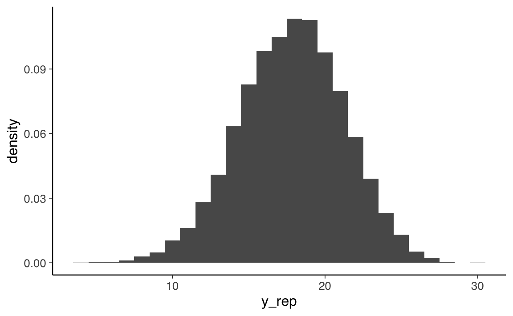
Si noti che l’istogramma così ottenuto è equivalente a quello trovato nella simulazione precedente.
La distribuzione predittiva a posteriori viene utilizzata per eseguire i cosiddetti controlli predittivi a posteriori (Posterior Predictive Checks, PPC). Nella distribuzione predittiva a posteriori, viene generato un campione di dati possibili futuri utilizzando le proprietà del modello adattato. È ovvio che tali dati possibili futuri devono almento essere coerenti con i dati del campione presente. I PPC eseguono un confronto grafico tra \(p(y^{rep} \mid y)\) e i dati osservati \(y\): confrontando visivamente gli aspetti chiave dei dati previsti futuri \(y^{rep}\) e dei dati osservati \(y\) è possibile determinare se il modello è adeguato.
Oltre al confronto visivo tra le distribuzioni \(p(y)\) e \(p(y^{rep})\) è anche possibile un confronto tra la distribuzione di varie statistiche descrittive, i cui valori sono calcolati su diversi campioni \(y^{rep}\), e le corrispondenti statistiche calcolate sui dati osservati. Vengono solitamente considerate statistiche descrittive quali la media, la varianza, la deviazione standard, il minimo o il massimo, ma sono possibili confronti di questo tipo per qualunque altra statistica.
Esercizio 24.2 Esaminiamo ora un set di dati che non seguono la distribuzione normale (Gelman et al., 2020). I dati corrispondono ad una serie di misurazioni prese da Simon Newcomb nel 1882 come parte di un esperimento per stimare la velocità della luce. A questi dati verrà (inappropriatamente) adattata una distribuzione normale. L’obiettivo dell’esempio è quello di mostrare come i PPC possono rivelare la mancanza di adattamento di un modello ai dati.
I PPC mostrano che il modo più semplice per verificare l’adattamento del modello è quello di visualizzare \(y^{rep}\) insieme ai dati effettivi. Iniziamo a caricare i dati.
Visualizziamo la distribuzione dei dati con un istogramma.
tibble(newcomb) %>%
ggplot(aes(x = newcomb, after_stat(density))) +
geom_histogram(binwidth = 1)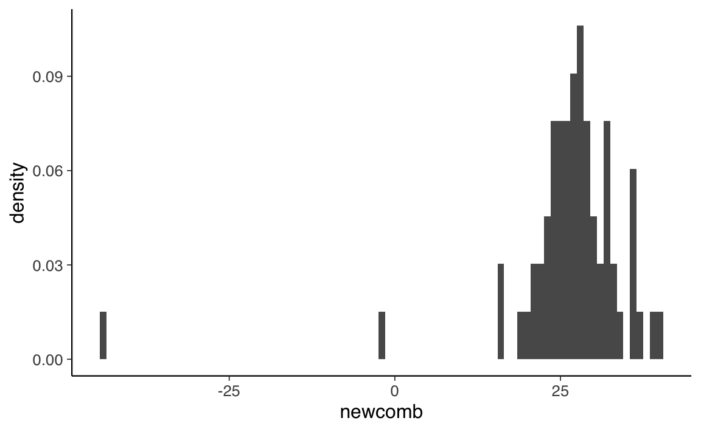
Creiamo un oggetto di tipo list dove inserire i dati.
Utilizziamo il seguente codice Stan per il modello normale.
modelString <- "
data {
int<lower=0> N;
vector[N] y;
}
parameters {
real mu;
real<lower=0> sigma;
}
model {
mu ~ normal(25, 10);
sigma ~ cauchy(0, 10);
y ~ normal(mu, sigma);
}
generated quantities {
vector[N] y_rep;
for (n in 1 : N) {
y_rep[n] = normal_rng(mu, sigma);
}
}
"
writeLines(modelString, con = "code/newcomb.stan")Adattiamo il modello ai dati.
file <- file.path("code", "newcomb.stan")
mod <- cmdstan_model(file)
fit <- mod$sample(
data = data_list,
iter_sampling = 4000L,
iter_warmup = 2000L,
seed = SEED,
chains = 4L,
refresh = 0
)Otteniamo le stime dei parametri \(\mu\) e \(\sigma\).
fit$summary(c("mu", "sigma"))
#> # A tibble: 2 × 10
#> variable mean median sd mad q5 q95 rhat ess_bulk ess_tail
#> <chr> <dbl> <dbl> <dbl> <dbl> <dbl> <dbl> <dbl> <dbl> <dbl>
#> 1 mu 26.2 26.2 1.33 1.30 24.0 28.4 1.00 13305. 11189.
#> 2 sigma 10.9 10.8 0.958 0.943 9.40 12.5 1.00 12614. 10352.Trasformiamo l’oggetto fit in un formato stanfit.
stanfit <- rstan::read_stan_csv(fit$output_files())Rappresentiamo graficamente la distribuzione a posteriori di \(\mu\).
mu_draws <- as.matrix(stanfit, pars = "mu")
mcmc_areas(mu_draws, prob = 0.95) # color 95% interval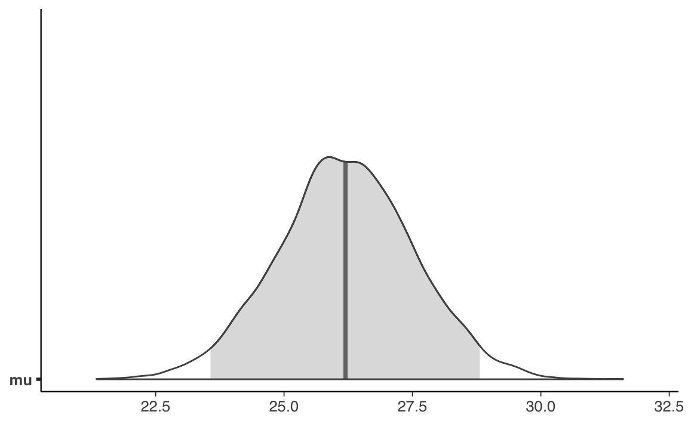
La media campionaria è pari a 26.21.
mean(newcomb)
#> [1] 26.21212Anche se trova la media giusta, il modello non è comunque adeguato a prevedere le altre proprietà della \(y\). Estraiamo \(y^{rep}\) dall’oggetto stanfit.
I valori y_rep sono i dati della distribuzione predittiva a posteriori che sono stati simulati usando gli stessi valori \(X\) dei predittori utilizzati per adattare il modello. Il confronto tra l’istogramma della \(y\) e gli istogrammi di diversi campioni \(y^{rep}\) mostra una scarsa corrispondenza tra i due.
ppc_hist(data_list$y, y_rep[1:8, ], binwidth = 1)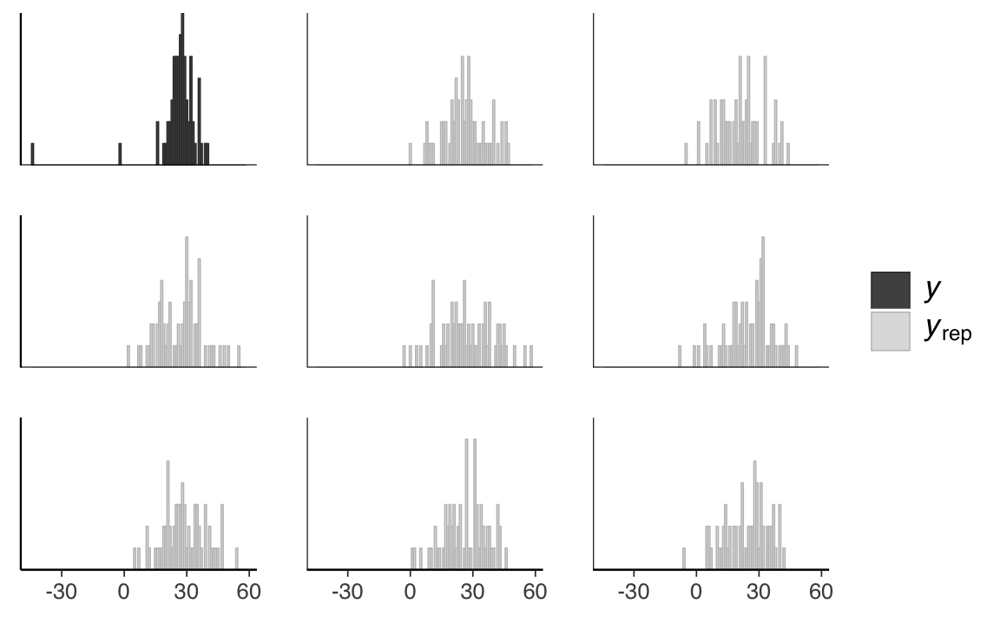
Alla stessa conclusione si giunge tramite un confronto tra la funzione di densità empirica della \(y\) e quella di diversi campioni \(y^{rep}\).
ppc_dens_overlay(data_list$y, y_rep[1:50, ])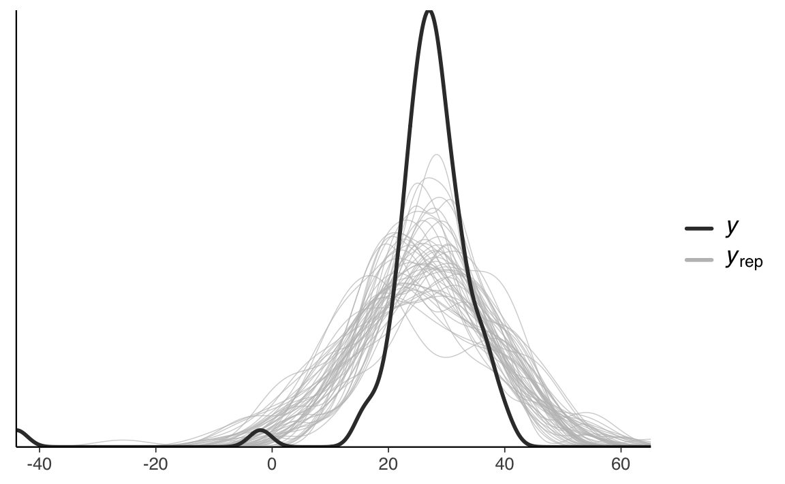
Generiamo ora i PPC per la media e il minimo della distribuzione.
ppc_stat_2d(data_list$y, y_rep, stat = c("mean", "min"))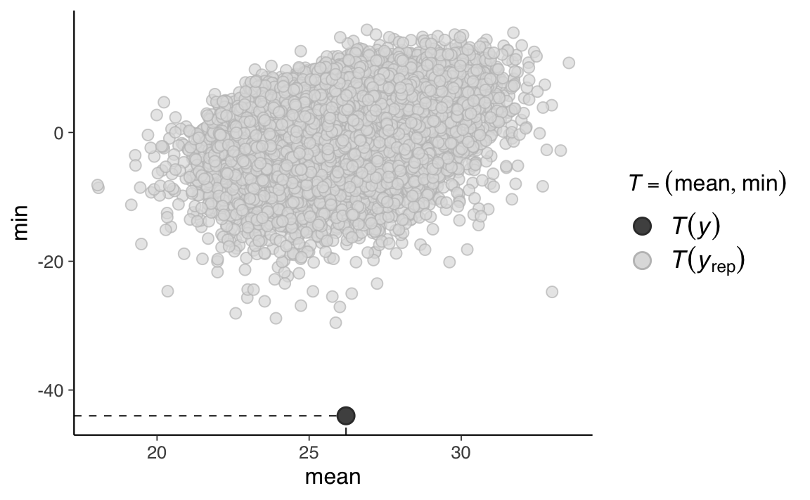
In conclusione, possiamo dire che mentre la media viene riprodotta accuratamente dal modello, ciò non è vero per il minimo della distribuzione. L’origine di questa mancanza di adattamento è il fatto che la distribuzione delle misurazioni della velocità della luce è asimmetrica negativa.
Dato che ci sono poche osservazioni nella coda negativa della distribuzione, solo per fare un esempio, utilizzeremo ora un secondo modello che ipotizza una distribuzione \(t\) di Student.
modelString = "
data {
int<lower=0> N;
vector[N] y;
}
parameters {
real mu;
real<lower=0> sigma;
real<lower=0> nu;
}
model {
mu ~ normal(25, 10);
sigma ~ cauchy(0, 10);
nu ~ cauchy(0, 10);
y ~ student_t(nu, mu, sigma);
}
generated quantities {
vector[N] y_rep;
for (n in 1 : N) {
y_rep[n] = student_t_rng(nu, mu, sigma);
}
}
"
writeLines(modelString, con = "code/newcomb2.stan")Adattiamo questo secondo modello ai dati.
file <- file.path("code", "newcomb2.stan")
mod <- cmdstan_model(file)
fit <- mod$sample(
data = data_list,
iter_sampling = 4000L,
iter_warmup = 2000L,
seed = SEED,
chains = 4L,
refresh = 0
)
#> Running MCMC with 4 sequential chains...
#>
#> Chain 1 finished in 0.2 seconds.
#> Chain 2 finished in 0.3 seconds.
#> Chain 3 finished in 0.3 seconds.
#> Chain 4 finished in 0.4 seconds.
#>
#> All 4 chains finished successfully.
#> Mean chain execution time: 0.3 seconds.
#> Total execution time: 1.5 seconds.Per questo secondo modello il confronto tra la funzione di densità empirica della \(y\) e quella di diversi campioni \(y^{rep}\) risulta adeguato.
stanfit <- rstan::read_stan_csv(fit$output_files())
y_rep <- as.matrix(stanfit, pars = "y_rep")
ppc_dens_overlay(data_list$y, y_rep[1:50, ]) + xlim(0, 50)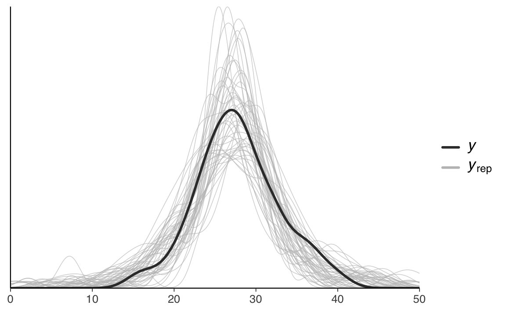
Inoltre, anche la statistica “minimo della distribuzione” viene ben predetta dal modello.
ppc_stat_2d(data_list$y, y_rep, stat = c("mean", "min"))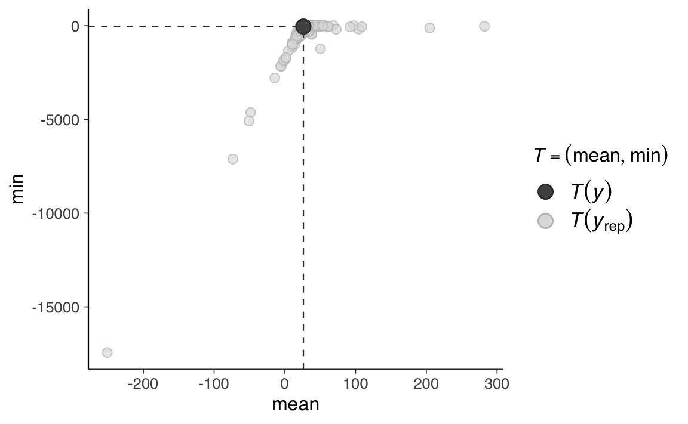
In conclusione, per le misurazioni della velocità della luce di Newcomb l’accuratezza predittiva del modello basato sulla distribuzione \(t\) di Student è chiaramente migliore di quella del modello normale.
Nella sezione precedente abbiamo visto come la distribuzione predittiva è stata usata per generare nuovi dati previsti futuri. Più precisamente, mediante l’Equazione 24.1 abbiamo descritto la nostra incertezza sulla distribuzione di future osservazioni di dati, data la distribuzione a posteriori di \(\theta\), ovvero tenendo conto della scelta del modello e della stima dei parametri mediante i dati osservati.
\[ p(\tilde{y} \mid y) = \int_{\theta} p(\tilde{y} \mid \theta) p(\theta \mid y) \,\operatorname {d}\!\theta\notag \]
Si noti che, nell’Equazione 24.1, \(\tilde{y}\) è condizionato da \(y\) ma non da ciò che è incognito, ovvero \(\theta\). La distribuzione predittiva a posteriori è ottenuta mediante marginalizzazione sopra i parametri incogniti \(\theta\).
In un modello bayesiano dove \(\theta\) ha una distribuzione a priori \(p(\theta)\) e per \(y\) possiamo definire la funzione di verosimiglianza \(p(y \mid \theta)\) possiamo scrivere la distribuzione congiunta \(p(y, \theta)\) come il prodotto della verosimiglianza e della distribuzione a priori:
\[ p(y, \theta) = p(y \mid \theta)p(\theta). \]
Una rappresentazione alternativa della distribuzione congiunta \(p(y, \theta)\) è
\[ p(y, \theta) = p(\theta \mid y)p(y). \]
Il primo termine in questo prodotto, la densità \(p(\theta \mid y)\), è la densità a posteriori di \(\theta\) date le osservazioni \(y\). Il secondo termine in questo prodotto, \(p(y)\), è la distribuzione predittiva a priori che rappresenta la distribuzione dei dati futuri previsti dal modello prima di avere osservato il campione \(y\). Se risulta che i dati osservati \(y\) non sono coerenti con la distribuzione predittiva a priori, ciò significa che il modello bayesiano non è specificato correttamente. In altre parole, questo ci dice che, in base al modello bayesiano che abbiamo formulato, è improbabile che si verifichino i dati che sono stati effettivamente osservati. Ovviamente, questo vuol dire che il modello è inadeguato.
La distribuzione predittiva a priori può essere ricavata facilmente se l’inferenza bayesiana viene svolta mediante i metodi MCMC. Per fare un esempio consideriamo nuovamente i dati di Zetsche et al. (2019), con 23 successi in 30 prove. Nella discussione precedente abbiamo svolto l’aggiornamento bayesiano imponendo su \(\theta\) una distribuzione a priori \(\mbox{Beta}(2, 10)\).
Nel caso di una verosimiglianza binomiale e di una distribuzione a priori Beta, la distribuzione predittiva a priori può essere costruita mediante la funzione LearnBayes::pbetap().
df <- tibble(
y = 0:30,
Probability = LearnBayes::pbetap(c(2, 10), 30, 0:30)
)
df %>%
ProbBayes::prob_plot(Color = "gray", Size = 3) +
geom_point(data = tibble(y = 23, Probability = 0), size = 3) 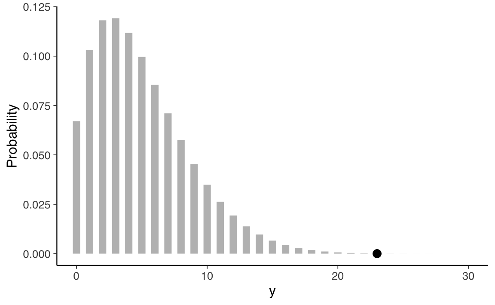
La distribuzione predittiva a priori assegna livelli diversi di credibilità a ciascuno dei possibili risultati dell’esperimento casuale, ovvero il fatto di osservare 0, 1, , 30 successi in 30 prove Bernoulliane.
Nella distribuzione predittiva a priori riportata nel grafico precedente ho evidenziato il punto \(y = 23\), ovvero il numero di successi nel campione. Il grafico mostra che la distribuzione predittiva a priori assegna una credibilità quasi nulla all’evento \(y = 23\), ovvero ai dati che sono stati effettivamente osservati. Questo indica chiaramente che la distribuzione a priori \(\mbox{Beta}(2, 10)\) non è adeguata per i dati che stiamo analizzando, così come avevamo in precedenza anticipato.
Se viene invece utilizzata una distribuzione a priori debolmente informativa, o vero \(\mbox{Beta}(2, 2)\), la distribuzione predittiva a priori assume la forma seguente.
df <- tibble(
y = 0:30,
Probability = LearnBayes::pbetap(c(2, 2), 30, 0:30)
)
df %>%
ProbBayes::prob_plot(Color = "gray", Size = 3) +
geom_point(data = tibble(y = 23, Probability = 0), size = 3) 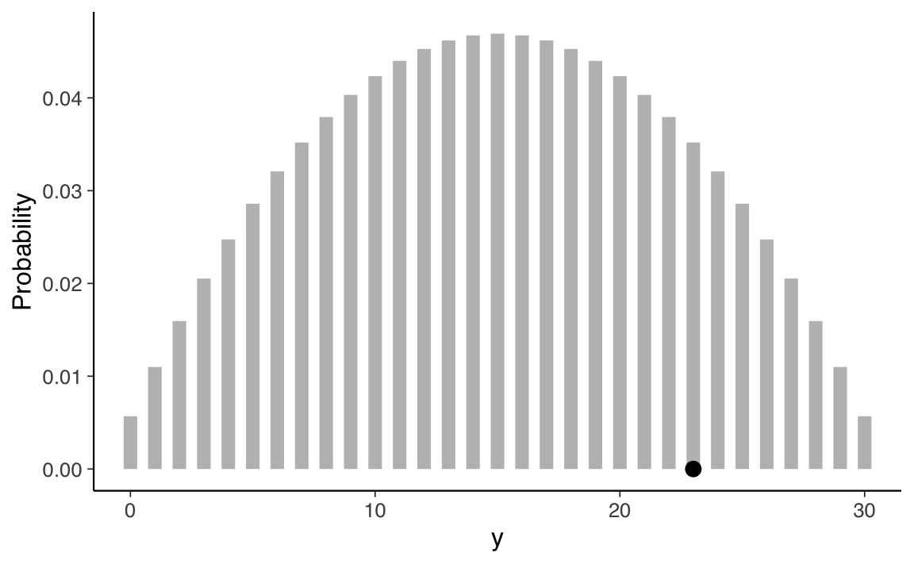
In questo secondo caso al valore \(y\) osservato viene assegnata una credibilità piuttosto alta. Ciò significa che una \(\mbox{Beta}(2, 2)\) fornisce un’adeguata distribuzione a priori per i dati a disposizione.
Nella discussione dell’analisi dei dati di Zetsche et al. (2019), la \(\mbox{Beta}(2, 10)\) è stata utilizzata quale distribuzione a priori solo per evidenziare le proprietà dell’aggiornamento bayesiano (la differenza tra la distribuzione a priori e la distribuzione a posteriori). La discussione presente chiarisce che la \(\mbox{Beta}(2, 10)\) non è una buona scelta per la distribuzione a priori: sarebbe molto migliore la scelta di una \(\mbox{Beta}(2, 2)\).
Questo capitolo discute la predizione bayesiana e ne mostra un’applicazione nel caso dei controlli predittivi a posteriori. A questo proposito è necessario notare un punto importante: un buona corrispondenza tra \(y\) e \(y^{rep}\) costituisce una condizione necessaria ma non sufficiente per la validità del modello. Infatti, i PPC non sono in grado di garantire la generalizzabilità del modello a nuovi campioni di dati. D’altra parte, invece, se i PPC mostrano un cattivo adattamento del modello ai dati previsti futuri, questo ci dice chiaramente che il modello è specificato in maniera errata.